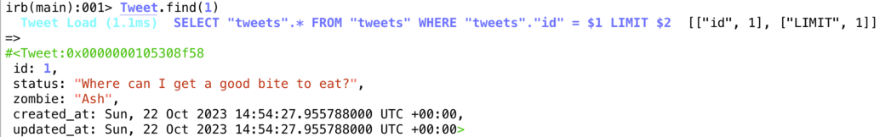

1 Models and Databases
In a modern programming language like rails we represent things in the real world with objects. For example if you are building a web application for project management, you will have objects of classes Project, and WorkPackage, and User. These classes also implement the "Business Logic": all the methods needed for handling projects are actually implemented in the Project class.
To save these objects permanently (often called "persistance") we use a relational database, in most cases Postgres or MySQL/MariaDB. Only the data is stored in the database, not the behaviour (see "Business Logic" above).
Here we hit on an old problem in computer science: storing objects into a relational database does not work all that well. This problem is called the Object-relational impedance mismatch and has been discussed since the early 1980ies.
1.1 ORMs
Today there exist several Design Patterns and Libraries for solving this. The solution is called an Object Relational Mapper or ORM.
Two Patterns used in Rails for this problem are ActiveRecord and ObjectMapper, both described by Fowler in his 2003 book Patterns of Enterprise Application Architecture. ActiveRecord is the default solution used in Rails, we will look into it in detail here.
2 ActiveRecord Basics
Rails implements the Active Record pattern in a class called ActiveRecord.
All the '''models''' in a rails project inherit from ActiveRecord.
class Thing < ActiveRecord::Base end
2.1 The Mapping
A quick overview of how Objects and Database relate when using ActiveRecord in Rails:
Database Ruby on Rails --------------------------- -------------------------- table courses class Course in the Database in file app/models/course.rb one row in the table one object of the class Course an attibute in the table a property of the object SELECT * FROM courses WHERE id=7 Course.find(7)
2.2 Conventions
Rails has several conventions regarding ActiveRecord and the database:
- The Model Class is written in first-letter-uppercase, and uses a singular noun:
Course - The table in the database is written in lowercase, and uses the plural of this noun:
courses - The table contains an integer attribute
idas its primary key - All the attributes from the database table will show up as properties of the model in rails automatically
- If there's an 1:n relationship between two models, the table on the "one" side will contain a foreign key like so:
- table
usersand tablephones(one user has many phones) - table
phonescontainsuser_idthat referencesusers.id
- table
- If there's a n:m relationship between two models, there will be a join table like so:
- table
usersand tableprojects(one user has many projects, one project has many users) - table
projects_userscontainsuser_idandproject_id(and nothing else) - there is no class in rails to represent the join table
- table
2.3 Not following Conventions
If you stick to these conventions building the web app will be very easy. You can deviate from these conventions, but this takes some extra configuration and programming work.
Here is one scenario where deviating from the conventions might make sense: You are building a rails app to replace an old php app, but you want to keep using the same database. You can start with the models in rails configured to fit with your old database, and then refactor and migrate towards the rails conventions step by step.
3 Database
3.1 How to build a model
To build the first model and its corresponding database table,
you can use the scaffold generator.
You need to work on the command line using the command rails.
(before rails 5 there was a second command rake but you don't need that any more.)
-
rails generate scaffold tweet status:string zombie:string- This will generate a Model
Tweetand a migration to create tabletweets
- This will generate a Model
- look at the migration that was generated in
db/migrate/*create_tweets.rb - you can edit the migration now - but not later!
- run the migration:
rails db:migrate- this will run the appropriate
CREATE TABLEstatement in your database
- this will run the appropriate
- look at the model generated in
app/models/tweet.rb - add validations, associations to the model
3.2 Database Migrations
During Development the database schema will change just as much as the code will change. And both changes belong together: if I push out a code change to my fellow developers without the db schema changes, they will not be able to use the code.
Rails offers "Database Migrations" to cope with this fact.
A "Migration" is a (small) change in the database schema. The change is
described in ruby and saved to a file in the folder db/migrations.
The files are identified by a timestamp and a uniq name, for example:
20191031100433_create_venues.rb 20191031100442_create_events.rb 20191031100501_add_venue_ref_to_events.rb
The first two of these migrations were generated by the scaffold,
the last one by rails generate migration AddVenueRefToEvent.
The scaffold creates a migration for creating a table:
class CreateEvents < ActiveRecord::Migration
def change
create_table :events do |t|
t.string :title
t.text :description
t.datetime :start_time
t.datetime :stop_time
t.boolean :free
t.timestamps
end
end
end
Use rails to apply this migration to the existing database:
-
rails db:migrate# apply all open migrations -
rails db:rollback# roll back last migration
A word of warning: you never, ever need to change a migration after using and commiting it. You only ever add new migrations!
4 Model CRUD
4.1 the model in the console
You can use the rails console to work with
the model interactively. This is similar to the ruby console irb
but with your rails app already loaded.
Any changes you make are really written
to the development database!
rails console
4.2 Finding a model
The database table always has a primary key id. You can use this
key to find a specific record:

When you type in Tweet.find(1) into the rails console, you get two answers:
First (in color) it shows you the SQL query sent to the database. In this case
SELECT "tweets".* FROM "tweets" WHERE "tweets"."id" = ? LIMIT ?. You can see
that prepared statements are used, and that a limit is always placed on the number
of answers.
After the Arrow (=>) the rails console shows the return value of the command
you typed in. Here this is an object. The console prints out the details of this
object using the inspect method.
From now on we will use this slightly shortended format to show rails console input and output:
irb> Tweet.find(1) => #<Tweet id: 1, status: "Where can I get a good bite to eat?", zombie: "Ash">
(We will leave out the SQL, and some timestamps.)
4.3 Accessing the properties
You can access the properties of the model object as if it were a hash or through method names:
irb> t = Tweet.find(3) => #<Tweet id: 3, status: "I just ate some delicious brains.", zombie: "Jim"> irb> t.status => "I just ate some delicious brains." irb> t[:status] => "I just ate some delicious brains." irb> t.zombie => "Jim" irb> t[:zombie] => "Jim"
4.4 CRUD = Create, Read, Update, Delete
Create
t = Tweet.new t.status = "I <3 brains." t.save
Read
Tweet.find(3)
Update
t = Tweet.find(3) t.zombie = "EyeballChomper" t.save
Delete
t = Tweet.find(3) t.destroy
5 On Documentation
You should have the ruby and rails documentation available on your computer at all times. A handy tool for this on mac os x is Dash. This is what a Rails Guide looks like in Dash:

5.1 Further reading
- The Rails Guides give a good introduction to a subject area:
- Rails Guide: Active Record Query Interface
- Rails Guide: Active Record Associations
- Use the API Dock to look up the details:
- Rails @ API Dock: find()